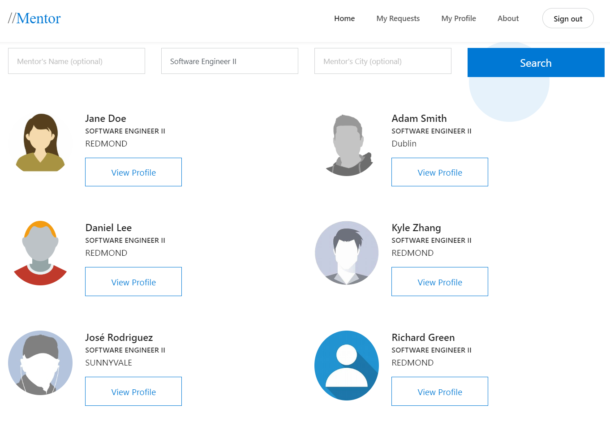

Mentor
For Microsoft Employees
Summary
The Microsoft Mentor program was struggling to help new users find mentors. I ran usability tests and a survey; analyzed the data, and created 10 actionable tasks to improve our search and database interface. Four of my 10 recommendations were implemented during the 2020 Hackathon.
Timeline: July 2020 Hackathon at Microsoft
Outline
- The problem
- User studies
- Surveys
- Final solution
- Outcome and impact
The problem
The internal Microsoft website aka.ms/Mentor has been a hackathon project since 2016, but design was never a priority. I was tasked with finding usability issues and determining if we needed small updates or a total rewrite.
The goal of Mentor is to help Microsoft employees find mentors. Stakeholders include mentee candidates, mentor candidates, software engineers, and PMs. I determined that the essential tasks for users were the ability to:
- Input/edit personal data
- Search, select, and request mentorship
- Accept or reject a mentorship role
- Find information about becoming a better mentor/mentee
User studies
I ran six 30-minute usability studies where I asked users:
- Summarize previous mentoring experience; outline ideal mentoring experience
- What they would look for in a mentor; to search for a mentor
- To select a mentor; how they would like to select a mentor
- To update their profile; what data they wanted to see about possible mentors or mentees
- To accept a mentoring request from me; what factors they would consider before accepting a request
- What they would like to see on the website; where it would be and how it would work
Many participants struggled with the search interface. P5 entered their own name, job title, and location. When the query returned no results, they reported:
"I'm a [job title] in [location], and it says they don't have a mentor for me." -P5
After P2 tried entering permutations of their first, middle, and last name into the "name" field, four different job titles, and five locations. But each of their 14 queries returned zero possible mentors, and after three minutes stopped using the software. While P5 and P2 were the only users who quit using the interface, P1 vocalized confusion about before leaving the "name" field blank and P4 used their own name for several queries before they tried leaving the "name" field blank.
The remaining four participants (P1, P3, P4, P6) continued in the study by viewing the search results and explaining how they selected a mentor.
"Honestly, I'm just looking at pictures. I feel like I am more likely to choose someone who has a profile picture than someone who doesn't." -P4
Each of the four users expressed interest in seeing other fields shown on the results page, and P1 expressed frustration that they had already filtered users by the three fields that were shown for each possible mentor. I gathered the suggestions and used them to create a multiple choice options on a survey about factors to consider when selecting a mentor.
After viewing several profiles, I asked participants if they were ready to select a mentor. Three of the four participants reported they were not, and I asked them to pretend to request me as their mentor. Each of the four participants were hesitant when I asked them to guess what would happen when they clicked on the "Apply for mentorship" button. One guessed an email would be sent to the mentor, another assumed that they would need to login first (they weren't aware they were automatically logged in already), a third was hopeful that they could write a note to customize the request, and the fourth participant assumed that their own manager would be notified and then decide whether they were permitted to ask for a mentor.
Some users realized at this point that they already had a profile, and (correctly) guessed that some of their data might be sent over when they requested mentorship. I asked participants to make any wanted changes to their profile. At this point, two participants vocalized confusion over how their profiles were auto-populated with data (when did I make an account? What is "Delve"? If this data came from Microsoft, will changing it here impact other accounts?). While looking at their profile page, there was also disagreement over what the "stop mentoring" button does (stop being mentored, or stop mentoring? Will there be a confirmation box?).
Along the way, users mused about whether they were searching for a mentor "correctly". P4 wasn't sure what attributes would be good for a mentor to have. P3 wasn't sure if she should request that the person that she knew be her mentor, or if she should pick a stranger. P1 spent twice as long as other participants drafting their message asking for mentorship. At the end of the study, when I asked users where they would go to find information about becoming a better mentor or mentee, two users admitted they were not likely to go search for advice, but said that advice should be built into the software along the way.
Surveys
I ran a survey to identify what factors recent college grads at Microsoft considered when searching for new mentors. I found that 72% of participants were most interested in finding a career mentor and 89% of partcipants were most interested in a traditional mentor.

There was less of a consensus when asked to report what factors were the top five for them when picking a mentor: 79% said the mentor's career path, 72% said the mentor's experience, 65% said whether they "clicked" with the mentor, 62% said the mentor's personality, 49% said the mentor's enthusiasm for mentoring. Except for the category "other", which only received one vote, the remaining eight categories all recieved five or more votes.
Final solution

Outcome and impact
I hypothesize that 66% of users typed in their own name because they expected to see a login page, but further research would need to be done on that subject. Users expect to login when they first access a new site, but login screens can be a deterrent for users who do not want to make more accounts or try to remember their password. Before asking the engineering time to commit hours to making signup or login pages, I suggested a temporary workaround: clarifying that we were asking users to search for a mentor's name and that the field was optional. The changes to the three search fields were pushed before the hackathon ended.
I also recommended adding a "pencil" icon to the left of the button that allows users to edit their profile. I was not able to measure mouse movements, but users were slow to click on the verbose "Edit my profile via Delve" button.
I am currently running further usability testing before we implement new email notification templates. I've joined the year round team that works on this tool so that I can help as we discuss solutions that are beyond the scope of a three day hackathon.